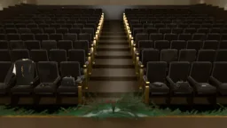

A seat is kept for you
IVthe front row
Every seat in the front row was taken, and not by people.
Coema, a small duffel, sat with its handles down. Beside it Voluta, a round bag shaped like the can a film travels in. Across the aisle, Itaoca, a bag with one handle, lowered; then Coaraci, a belt, coiled, its gold disc turned to the screen like a face.
They sat the way an audience sits when it already knows the film: still, front to the light, wanting nothing explained.

STAND-IN · img/book/plate-iv/master.* (the plate for IV. The Front Row: The whole row from in front, every piece in its seat, the screen’s light on them.; 8K, 7680 × 4320)Kept: Seat L2, empty among the taken seats.
The maker’s notes
COEMA, THE MATINEE · ENTERS
- It begins as one panel of black calfskin, 2 mm thick, wrapped round a flat base and closed by two piped ends.
- It measures about 25 by 11 by 11.5 cm.
- One row of squares is pressed round the body, 0.45 mm deep, each square 43 by 45 mm.
- It is carried by two short rolled handles on gold rings, or by a strap 20 mm wide and 3.5 mm thick.
- It closes on a gold zip with two sliders, and stands on four gold feet.
- A leather charm, 23 by 38 mm, hangs from the front handle’s ring with a 12.5 mm gold plate.
Inside it: cream suede, printed with a couple in black halftone.
The piece · CoemaVOLUTA, THE REEL · ENTERS
- It begins as a circle of black calfskin: 22 cm across, 7 cm deep.
- Sixteen squares are pressed round the side band, 0.4 mm deep, each 43.2 by 44.9 mm.
- The lid is pressed with four fine rings and hinged at the back on a leather strip.
- It closes at the front on a round gold disc, 24 mm.
- The strap is 12 mm wide and folds through a gold ring on each side.
Inside it: cream suede, and the mark pressed 0.8 mm into the suede of the lid.
The piece · VolutaITAOCA, THE PÖ TOP-HANDLE · ENTERS
- It begins as black calfskin on a trapezoid: 31 cm at the base, 26.2 cm at the top, 19.8 cm tall.
- One flap runs from a hinge on the top to half the height of the front.
- A panel of 7 by 2 squares is pressed into the flap, 0.55 mm deep, with 8 mm of plain leather round it. The flap alone carries the monogram.
- The handle is rolled, 18 by 16 mm, and rises 11 cm above the top on two 22 mm gold rings.
- It closes on the house disc, 24 mm, the mark engraved 16 mm tall.
Inside it: cream suede, on the body and under the flap.
The piece · ItaocaCOARACI, THE DISC BELT · ENTERS
- It begins as two layers of black calfskin: 30 mm wide, 3.6 mm thick, 105 cm from bar to tip.
- It is stitched 3.0 mm in from each edge, a stitch every 3.5 mm, and the edges are painted.
- Five holes are punched, 4.5 mm across, 25 mm apart, the first 90 mm from the tip.
- It closes on a gold disc, 40 mm, the mark engraved 26 mm tall.
Behind it: a 2.4 mm gold bar on two posts and a 1.5 mm prong. From the front, the disc is all there is.
The piece · Coaraci